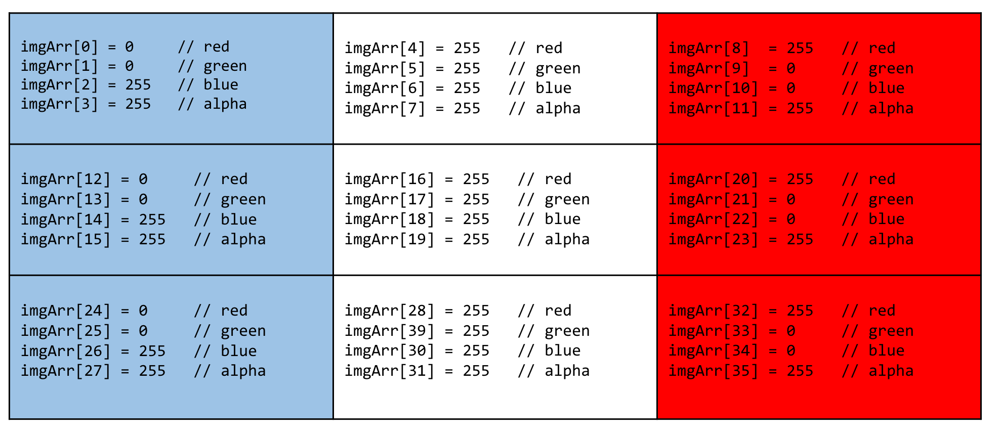
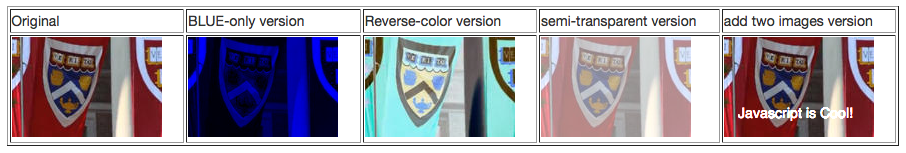

This is worth half of the total point value for the Unit 2 Project. This is worth half of the total point value for the Unit 2 Project. There will be a Unit 2 Project: Part B as well, released in two weeks. The course material needed to solve these problems is covered in weeks 1-4 of the course. Some of these solutions will require that you use concepts you've learned in new ways, or look up and use new properties and methods of standard Javascript objects, such as String or Math. If the conceptual leap from the basics you've learned so far to the problems here seems large, be sure to attend section meetings, ask questions in Piazza, and re-read/re-watch the course material if necessary!
How to handle the most basic information in a computer program: numbers
and strings, arrays, and conditionals.
In the zip file you downloaded for this project, open js/hw2ConvertTemp.js. It contains a function called convertFtoC() and one called convertCtoF(), which, at the moment, do nothing. You're going to edit this file to provide the code that makes these functions work to convert Fahrenheit to Celsius, and vice versa. You can test your code with the form fields below—your conversion code will run whenever you change the content of the input fields.
If the user types in values that are not numbers, do nothing.
Remember that the formula for converting temperature looks like this:
°C x 9/5 + 32 = °F
This is an exercise in using Javascript's random number generator, along with some simple arithmetic, to place an X in a box in a randomly chosen location. Applications of this would include placing a game character on the game board, or setting stars or snowflakes in a graphic.
Ultimately, your task is to calculate a random x and y coordinate for the location of the 'X'. You'll have to do some math to get the random number, generated by a function which returns a floating-point number between 0 and 1, to map to the width and height of the containing DIV. js/hw2PutAnX.js contains an empty function where you will add your code.
We're going to use some basic built-in string functions to manipulate a string: your name. Modify the code in the js/hw2SplitString.js file to output the first and last name separately into the page below. Your code should work for any name entered. See the JS file for more on what input validation is expected.
is my full name.
Recall that the Fibonacci sequence is a series that begins with two integers: 0, 1. The next number in the sequence is derived by adding the previous two numbers, so the Fibonacci sequence looks like this: 0, 1, 1, 2, 3, 5, 8, 13, 21, 34, ...
The button below will run your function, called twelveEvenFibonacciSum() and print its result in the space provided. All you have to do is write the function, which accepts no arguments, and returns the sum of the first 12 even Fibonacci numbers. Your code will go in js/hw2TwelveEvenFib.js
Hint: First you'll need a loop that generates Fibonacci numbers. You'll need a way to test each one for whether it's even or odd. And you'll need to sum up the even ones, counting them as you go. Count zero as the first even number in the sequence.
The image below (labeled "Original") appears inside an HTML canvas element. We'll learn more about canvas elements later in the course. For now, the important thing to know is that, unlike an image displayed normally in the browser using the IMG tag, the image data that appears in a canvas element is available to Javascript as a "bitmap".
The bitmap data is an Array that maps four numbers to each pixel in the image: r, g, b, a, where r, g, b are integer values from 0 to 255 which describe red, green, and blue respectively; and a, which is an 'alpha' value between 0 and 255 in which 0 is transparent and 255 is completely opaque. Since there are four array elements for each pixel, the total array will contain 4 times as many elements as there are pixels in the image.
The first pixel's red data is at data[0], the second pixel's red data at data[4], etc.
Your job is to write additional code inside the function that will modify the image data to create four new versions, as described below and in the js/hw2ArrayImageProcessing.js file.
Remember, this problem is, at its essence, about arrays and looping and counting, not about fancy graphics-processing mathematics. The key is to traverse the data array, copying and modifying the appropriate values as you go. Along the way, you'll be learning that looping and counting can sometimes be all it takes to do "fancy graphics-processing mathematics"!
Here's a diagram that may help. This is a nine-pixel approximation of the French flag, as a bitmap.
There are nine pixels, each with four array elements to describe their appearance, for 36 data elements in all.
So, for example, to change the color of the top-right pixel to blue, you'd change
imgArr[8] to zero and imgArr[10] to 255.

In this case, you won't actually change the values in the original image array itself, but rather you'll copy the values over to a new array, and make the changes there. The comments in the js/hw2ArrayImageProcessing.js file should point you in the right direction.
Important Note: To do this exercise using your local file system (with no Web server involved), you will need to use Firefox as your browser. Chrome will display an error due to security constraints.
| Original | BLUE-only version | Reverse-color version | semi-transparent version | add two images version |
If you've done this correctly, the table above will look something like this screengrab: 